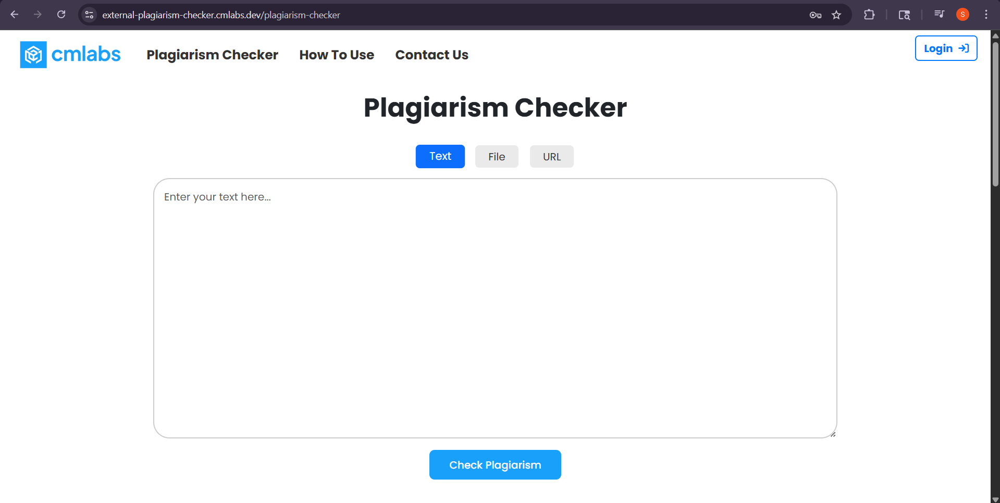
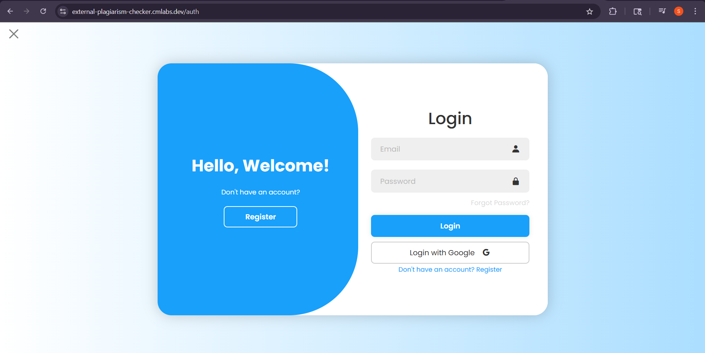
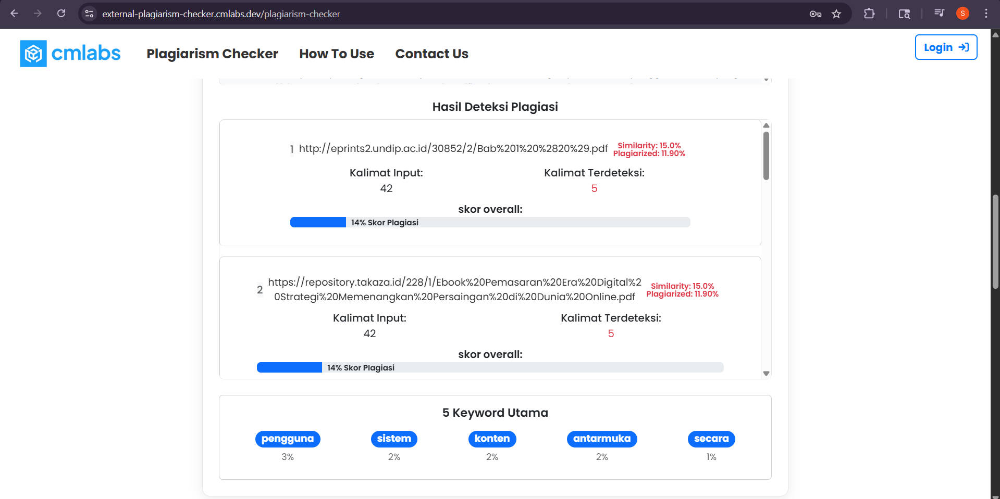

Magang Industri (Internship)
Februari 2025 — Mei 2025
Frontend Developer
cmlabs — SEO & IT Solutions · Surabaya / Remote
Sistem deteksi plagiarisme berbasis web yang membandingkan konten website pelanggan dengan sumber lain di internet untuk mengidentifikasi tingkat kemiripan, lalu menampilkan hasilnya secara visual dan interaktif. Platform ini digunakan untuk memverifikasi keaslian konten secara cepat dan akurat.
Tanggung Jawab & Capaian Utama:
- ▪ Mengembangkan arsitektur antarmuka web sistem deteksi plagiarisme menggunakan Vue.js dengan penekanan pada responsivitas dan kemudahan navigasi di berbagai perangkat.
- ▪ Mengintegrasikan REST API intensif secara dinamis agar hasil kalkulasi persentase kemiripan teks dapat divisualisasikan secara instan dan interaktif.
- ▪ Melakukan pengujian fungsional manual sebelum rilis produksi guna memastikan akurasi hasil scan teks.
Vue.js
RESTful API
Frontend
Engineering
Performance
Optimization
Manual QA
Dokumentasi Web cmlabs
Live System

Hasil Scan Plagiarisme Text

Input Text Form

Input File Upload
*Klik gambar untuk memperbesar tampilan